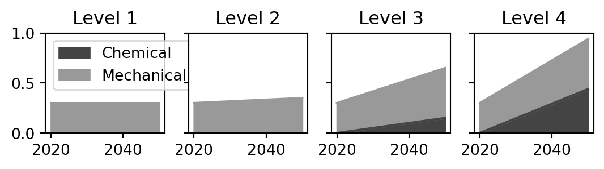
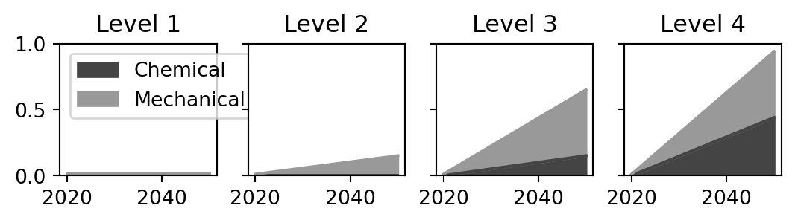
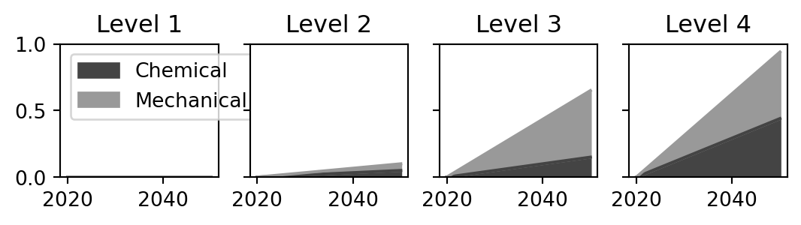
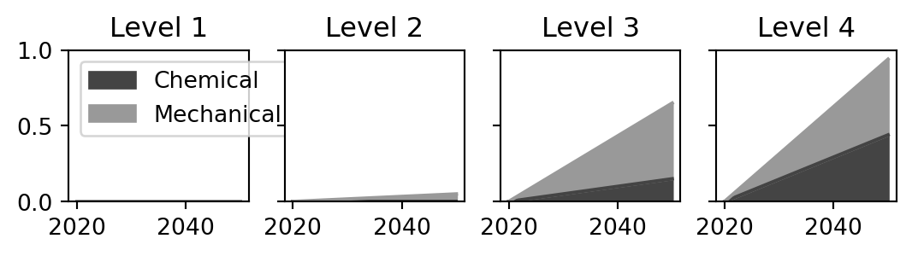
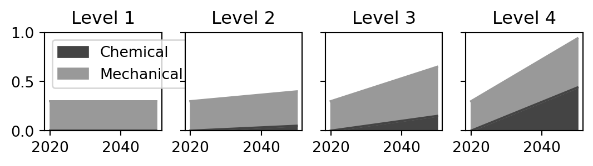
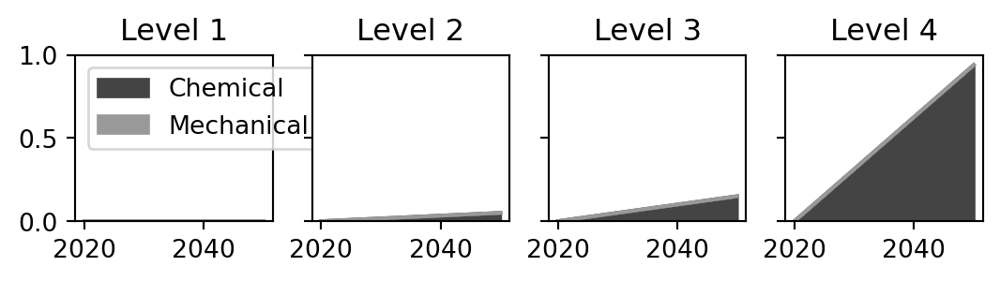
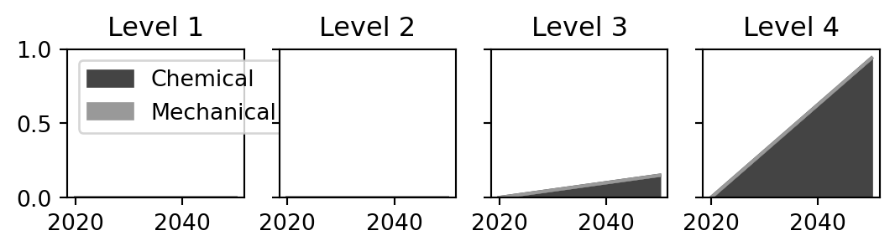
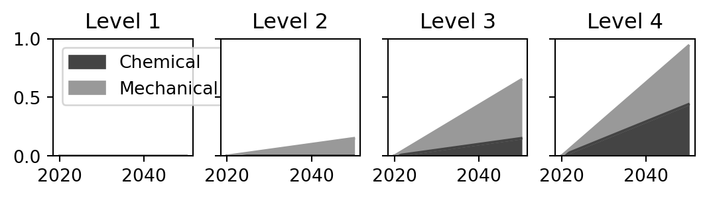

- Lever ID
- recycling
- Description
- Increase the fraction of end-of-life materials chemically or mechanically recycled
- Levels
-
- Level 1: Basline recycling fractions (no chemical recycling)
- Level 2: Reference projected recycling fractions
- Level 3: Ambitious projected recycling both chemical and mechanical
- Level 4: Nearly all waste which cannot be mechanically recycled is chemically recycled
6 recycling
This lever controls recycling rates for each polymer at end-of-life.
Plastics are made of two types of polymers: thermoplastics and thermosets.
Thermoplastics are made up of single long chains of molecules such as HDPE, LDPE, LLDPE, PP, PS, PET, PVC, and Fibre PPA. They can be melted and formed again to original state with little to no loss in properties. It makes sense to mechanically recycle them.
Thermosets involve crosslinking such as PUR and Styrene-Butadiene Rubber. Other polymers were placed under this category for simplicity. Melting them tend to induce curing and can change their properties. It does not make sense to mechanical recycle them. There is in literature mentioning cutting them up and re-using them, which is not mechanical recycling in the sense we want them back to their original form and purpose. Hence, chemical recycling that break down to their feedstock and/or monomer makes sense as these can be used to produce the original polymer back.
6.1 Possible recycling routes
First the possible recycling routes in different scenarios are set for 3 levels of ambition, as summarised in Table 6.1.
| Polymer type | Current | Practical | Ambitious |
|---|---|---|---|
| LDPE | M / _ | M / _ | M / C |
| HDPE | M / _ | M / _ | M / C |
| LLDPE | _ / _ | M / _ | M / C |
| PET | M / _ | M / C | M / C |
| PP | M / _ | M / _ | M / C |
| PVC | _ / _ | M / _ | M / C |
| PS | _ / _ | M / C | M / C |
| Fibre PPA | _ / _ | _ / C | M / C |
| PUR | _ / _ | _ / C | _ / C |
| Synthetic rubber | _ / _ | _ / _ | _ / C |
| Other polymers | _ / _ | _ / _ | _ / C |
6.1.1 Current routes
Currently the possibilities for recycling polymers are as follows:
LDPE, HDPE, and PET are widely recycled (OECD 2018). There is virtually no chemical recycling today (Van Geem 2023): all current recycling is mechanical.
PP can be mechanically recycled, but only 1% of the world production is recycled. Majority of the discarded PP goes to landfills and oceans (Basham 2019). There is also misconception that waste PP from health sector cannot be recycled, hence, majority are incinerated without recovering the energy (Healthcare 2019).
LLDPE can be mechanically and chemically recycled. Because it is often blended with other types of plastics that make its recycling challenging, consequently, its recycling rate is generally low (Arkema 2023). This is also compounded with the dwindling demand for LLDPE and about 60% is for single-use applications, investments on recycling LLDPE needs to be economically justified (Richardson 2018).
Mechanical recycling is recommended for PVC, but this is not happening now as it is mistaken to have low thermal stability and to generate toxic degradation products, which are misconceptions as it can be widely recycled (Lewandowski and Skórczewska 2022).
PS can be mechanically and chemically recycled (Maharana, Negi, and Mohanty 2007). Despite being so, PS recycling is not done globally at present, because it is not economically feasible (Marquez et al. 2023) and it is logistically difficult (Waring 2018). Hence, it makes more sense to produce virgin PS than recycle it.
PUR recycling is not predominantly done, despite the effort from manufacturers and legislators. Most PUR wastes end up in landfills (Kemona and Piotrowska 2020).
With tire industry representing 65% of the global rubber production, most rubber wastes go to landfills (Fazli and Rodrigue 2020).
PPA is generally mixed with other plastics, hence, it there is limited recycling, with most going to incineration and land filling (Hirschberg and Rodrigue 2023).
6.1.2 Future routes
Expectations for future improvements for each polymer are:
Following from the current practice: LDPE, HDPE, and PET will continue to be mechanically recycled (OECD 2018).
LLDPE, PP and PVC can be recycled more, via mechanical recycling Lewandowski and Skórczewska (2022).
PS and PET can be both mechanically and chemically recycled.
Mechanical recycling degrades the polymer properties of thermosettting PURs (Rossignolo, Malucelli, and Lorenzetti 2024) and PPA (Hirschberg and Rodrigue 2023), so chemical recycling is most appropriate.
This forms the “practical limit” level.
Beyond this, all the rest of the polymers can be chemically recycled provided the technologies became technically, economically and environmentally feasible. This forms the Ambitious level.
6.2 Quantifying recycling rates
The baseline overall global recycling rate is 9% according to OECD (2022). This is distributed across the relevant polymers for each level Table 6.1 based on the mass flow quantities of each polymer in the baseline model. The recycling rate for PP is 1% (Basham 2019), and equal recycling rates for HDPE, LDPE and PET of 30% was assumed to give an overall mass-weighted recycling rate of 9%.
The reference business-as-usual projection in recycling rate growth from OECD (2022) reaches 16% by 2050. We assume growth in mechanical recycling rates on the polymers already recycled to 15% and 35% respectively. Additional growth in recycling is distributed across the other recycling routes added in this level of Table 6.1 at 15% for LLDPE and 5% for others.
The more ambitious scenario from OECD (2022) reaches 47% overall recycling rate by 2050. This increase is achieved by increasing recycling rates to 50% for all polymers which can be mechanically recycled in Table 6.1, together with 15% chemical recycling of all polymers.
6.3 Parameter data
The plots below show the change in recycling rates over time for each polymer affected by this lever.




recycling parameter data (part 1)




recycling parameter data (part 2)

recycling parameter data (part 3)